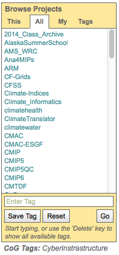
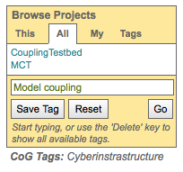
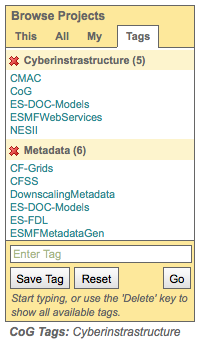

Projects¶
Join a project (not required to download data)¶
See Create an account in the Login/OpenID section on this tutorial.
View a project’s network¶
Project Browser¶
- The project browser widget has four different views…”This”, “All”, “My”, and “Tags”.
- The widget is located on the right hand side of the screen in the “services” section.
- You can navigate to a project by clicking on its name.
- Projects can be classified by tag.
- To see all tags use the “Delete” key in the tag box.
- Selecting a tag will narrow projects in the browser to projects with that tag.
| “This” View | “All” View | “My” View | “Tags” View |
| Shows the project’s parent, peer, and child projects | Shows all the projects currently hosted on CoG | Lists all the project a particular user is a member of | Lists projects with saved tags |

Search for projects by tag¶
- Project administrators can assign keywords (“tags”) to their project (see separate tutorial section on How to tag a project).
- Project tags appear below the Project Browser.
- Tags can be used to search for projects.
- Enter a tag or select one from the pull down menu and click “Go”
Tags auto complete (e.g. typing the letter “c” in the box will bring up a list of all tags that start with “c”.)
Clicking the delete key while in the box brings up the list of all tags

The Project Browser will automatically switch to the “All” tab
The project list will automatically be limited to those projects with the tagged searched.
The tag search applies to all tabs in the Project Browser.

Save a project tag and retrieve projects with that tag¶
- Project administrators can assign keywords (“tags”) to their project (view separate tutorial section on How to tag a project).
- Project tags appear below the Project Browser.
- Tags can be used to search for projects (view separate tutorial section on How to search for projects using tags).
- Enter a tag or select one from the pull down menu and click “Save Tag”
Tags auto complete (e.g. typing the letter “c” in the box will bring up a list of all tags that start with “c”.)
Clicking the delete key while in the box brings up the list of all tags.
Projects associated with the saved tag show up under the “Tags” tab.

View a project’s rollup¶
- All governance information is consolidated across a project’s heirarchy (peers and children) and displayed with the project’s own information.
- You will only see the roll-up if a project has their information filled in
Click on a link in the Upper Navigation Bar
Scan the bottom of the page for a “View Peer…” or “View Child…” accordion
Click the accordion